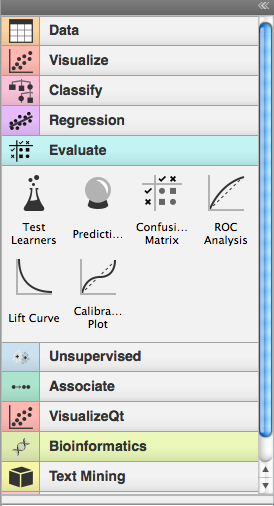
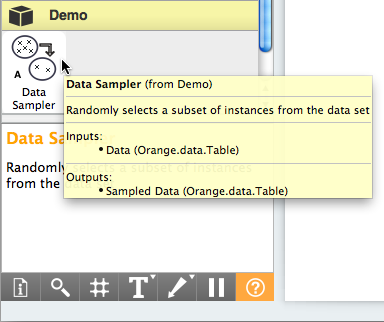
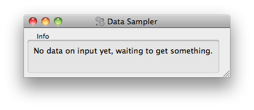
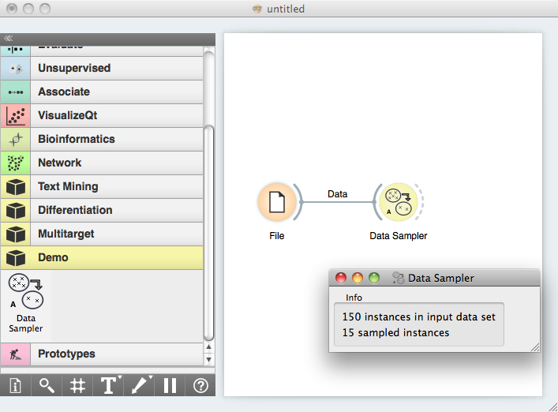
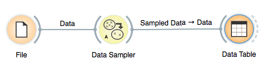

This is documentation for Orange 2.7. For the latest documentation, see Orange 3.
Getting Started¶
The tutorial on these pages is meant for those who are interested in developing widgets in Orange. Orange Widgets are components in Orange’s visual programming environment. They are wrappers around some data analysis code that provide graphical user interface (GUI). Widgets communicate, and pass tokens through communication channels to interact with other widgets. While simplest widgets consist of even less than 100 lines of code, those more complex that often implement some fancy graphical display of data and allow for some really nice interaction may be over 1000 lines long.
On this page, we will start with some simple essentials, and then show how to build a simple widget that will be ready to run within Orange Canvas, our visual programming environment.
Prerequisites¶
Each Orange widget belongs to a category and within a category has an associated priority. Opening Orange Canvas, a visual programming environment that comes with Orange, widgets are listed in a toolbox on the left:
The widgets and categories to which they belong are discovered at Orange Canvas startup leveraging setuptools/distribute and it’s entry points protocol. In particular Orange Canvas looks for widgets using a orange.widgets entry point.
First we will examine an existing widget in Orange. The Test Learners widget which is implemented in OWTestLearners.py.
Here is its header:
"""
<name>Test Learners</name>
<description>Estimates the predictive performance of learners on a data set.</description>
<icon>icons/TestLearners1.svg</icon>
<priority>200</priority>
"""
OWTestLearners is a Python module, so the header information we show about lies within the comment block, with triple quote opening and closing the comment. Header defines the name of the widget, its description, the name of the picture file the widget will use for an icon, and a number expressing the priority of the widget. The name of the widget as given in the header will be the one that will be used throughout in Orange Canvas. The description of the widget is shown once mouse rests on an toolbox icon representing the widget. And for the priority: this determines the order in which widgets appear in the toolbox within a category.
Widgets communicate. They use typed channels, and exchange tokens. Each widget would define its input and output channels in something like:
self.inputs = [("Test Data Set", Orange.data.Table, self.set_data),
("Learner", Orange.classification.Learner, self.set_learner)]
self.outputs = [("Evaluation Results", Orange.evaluation.testing.ExperimentResults)]
We will go over the syntax of channel definitions later, but for now the following is important:
- Widgets are defined in a Python files.
- Widgets are registered through entry points and are discovered at runtime.
- A python module implementing a widget starts with a header. This, given in sort of XMLish style, tells about the name, short description, location of an icon and priority of the widget.
- The sole role of priority is to specify the placement (order) of widgets in the Orange Canvas toolbox.
- Somewhere in the code (where we will learn later) there are two lines which tell which channels the widgets uses for communication. These, together with the header information, completely specify the widget as it is seen from the outside.
Note
Orange caches widget descriptions to achieve a faster startup, but this cache is automatically refreshed at startup if any change is detected in widgets’ file.
Let’s Start¶
Now that we went through some of the more boring stuff, let us now have some fun and write a widget. We will start with a very simple one, that will receive a data set on the input and will output a data set with 10% of the data instances. We will call this widget OWDataSamplerA.py (OW for Orange Widget, DataSampler since this is what widget will be doing, and A since we prototype a number of this widgets in our tutorial).
But first we must create a simple python project layout called Demo, that we will use in the rest of this tutorial.
The layout should be:
Demo/
setup.py
orangedemo/
__init__.py
OWDataSamplerA.py
and the setup.py should contain
from setuptools import setup
setup(name="Demo",
packages=["orangedemo"],
# Declare orangedemo package to contain widgets for the "Demo" category
entry_points={"orange.widgets": ("Demo = orangedemo")},
)
Note that we declare our orangedemo package as containing widgets from an ad hoc defined category Demo.
Following the previous example of OWTestLearners, our module defining the OWDataSamplerA widget starts with a following header:
<name>Data Sampler</name>
<description>Randomly selects a subset of instances from the data set</description>
<icon>icons/DataSamplerA.svg</icon>
<priority>10</priority>
This should all be clear now, perhaps just a remark on an icon. We can put any name here, and if Orange Canvas won’t find the corresponding file, it will use a file called Unknown.png (an icon with a question mark).
Orange Widgets are all derived from the class OWWidget. The name of the class should match the file name, so the lines following the header in our Data Sampler widget should look something like
import Orange
from OWWidget import *
import OWGUI
class OWDataSamplerA(OWWidget):
def __init__(self, parent=None, signalManager=None):
OWWidget.__init__(self, parent, signalManager)
self.inputs = [("Data", Orange.data.Table, self.set_data)]
self.outputs = [("Sampled Data", Orange.data.Table)]
# GUI
box = OWGUI.widgetBox(self.controlArea, "Info")
self.infoa = OWGUI.widgetLabel(box, 'No data on input yet, waiting to get something.')
self.infob = OWGUI.widgetLabel(box, '')
self.resize(100,50)
In initialization, the widget calls the __init__() method of a base class. Widget then defines inputs and outputs. For input, this is a Data channel, accepting tokens of the type Orange.data.Table and specifying that set_data() method will be used to handle them. For now, we will use a single output channel called “Sampled Data”, which will be of the same type (Orange.data.Table).
Notice that the types of the channels are specified by a class; you can use any class here, but if your widgets need to talk with other widgets in Orange, you will need to check which classes are used there. Luckily, and as one of the main design principles, there are just a few channel types that current Orange widgets are using.
The next four lines specify the GUI of our widget. This will be simple, and will include only two lines of text of which, if nothing will happen, the first line will report on “no data yet”, and second line will be empty. By (another) design principles, in an interface Orange widgets are most often split to control and main area. Control area appears on the left and should include any controls for settings or options that your widget will use. Main area would most often include a graph, table or some drawing that will be based on the inputs to the widget and current options/setting in the control area. OWWidget make these two areas available through its attributes self.controlArea and self.mainArea. Notice that while it would be nice for all widgets to have this common visual look, you can use these areas in any way you want to, even disregarding one and composing your widget completely unlike the others in Orange.
As our widget won’t display anything apart from some info, we will place the two labels in the control area and surround it with the box “Info”.
In order to complete our widget, we now need to define how will it handle the input data. This is done in a method called set_data() (remember, we did introduce this name in the specification of the input channel)
def set_data(self, dataset):
if dataset is not None:
self.infoa.setText('%d instances in input data set' % len(dataset))
indices = Orange.data.sample.SubsetIndices2(p0=0.1)
ind = indices(dataset)
sample = dataset.select(ind, 0)
self.infob.setText('%d sampled instances' % len(sample))
self.send("Sampled Data", sample)
else:
self.infoa.setText('No data on input yet, waiting to get something.')
self.infob.setText('')
self.send("Sampled Data", None)
The dataset argument is the token sent through the input channel which our method needs to handle.
To handle the non-empty token, the widget updates the interface reporting on number of data items on the input, then does the data sampling using Orange’s routines for these, and updates the interface reporting on the number of sampled instances. Finally, the sampled data is sent as a token to the output channel with a name “Sampled Data”.
Notice that the token can be empty (None), resulting from either the sending widget to which we have connected intentionally emptying the channel, or when the link between the two widgets is removed. In any case, it is important that we always write token handlers that appropriately handle the empty tokens. In our implementation, we took care of empty input data set by appropriately setting the GUI of a widget and sending an empty token to the output channel.
Although our widget is now ready to test, for a final touch, let’s design an icon for our widget. As specified in the widget header, we will call it DataSamplerA.svg and will put it in icons subdirectory of orangedemo directory.
{kind=link}
With this we cen now go ahead and install the orangedemo package. We will do this by running python setup.py develop command from the Demo directory.
Note
Depending on your python installation you might need administrator/superuser privileges.
For a test, we now open Orange Canvas. There should be a new pane in a widget toolbox called Demo. If we click on this pane, it displays an icon of our widget. Try to hover on it to see if the header and channel info was processed correctly:
Now for the real test. We put the File widget on the schema (from Data pane) and load the iris.tab data set. We also put our Data Sampler widget on the scheme and open it (double click on the icon, or right-click and choose Open):
Now connect the File and Data Sampler widget (click on an output connector of the File widget, and drag the line to the input connector of the Data Sampler). If everything is ok, as soon as you release the mouse, the connection is established and, the token that was waiting on the output of the file widget was sent to the Data Sampler widget, which in turn updated its window:
To see if the Data Sampler indeed sent some data to the output, connect it to the Data Table widget:
Try opening different data files (the change should propagate through your widgets and with Data Table window open, you should immediately see the result of sampling). Try also removing the connection between File and Data Sampler (right click on the connection, choose Remove). What happens to the data displayed in the Data Table?
Testing Your Widget Outside Orange Canvas¶
When prototyping a single widget, for a fast test I often get bored of running Orange Canvas, setting the schema and clicking on icons to get widget windows. There are two options to bypass this. The first one is to add a testing script at the end of your widget. To do this, we finished Data Sampler with
if __name__=="__main__":
appl = QApplication(sys.argv)
ow = OWDataSamplerA()
ow.show()
dataset = Orange.data.Table('iris.tab')
ow.set_data(dataset)
appl.exec_()
These are essentially some calls to Qt routines that run GUI for our widgets. Notice that we call the set_data() method directly.